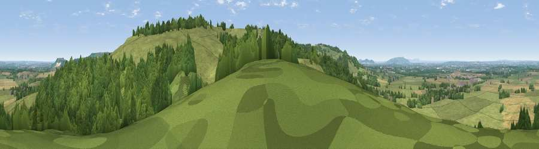

Viewpoint near Weston-sub-Edge
#8865 in England · top 17% of its area beats it · near Weston-sub-EdgeWhere it is
The exact computed spot (SP 13575 40525). Click the marker for map links.
The view, rendered

A 360° render of this exact spot computed from the terrain model, tree cover and land cover — summer colours, afternoon light, calibrated against photographs of famous viewpoints. Real trees, hedges and buildings will differ in detail.
The panorama
Grey silhouette: terrain skyline in each direction (720 bearings, Earth curvature and refraction included). Dashed green: skyline with trees (+15 m) and buildings (+8 m) as obstacles. Blue strip: how far the ground is visible on each bearing.
Where the view opens
Wedge length = distance to the farthest visible ground on that bearing (vegetation-aware). Rings at 10, 25 and 50 km.
What fills the view
52% grassland · 36% woodland · 11% cropland ·
Angular shares of the visible panorama (visual magnitude), not map area. Landscape diversity 0.43 (0–1 Shannon).
Key numbers
More beautiful places nearby
The staircase of upgrades: each row has a higher view potential than everything closer. Driving times are estimates from straight-line distance, calibrated against real road routing — check an actual route before setting out.
| Place | Direction | Drive | Score |
|---|---|---|---|
| Viewpoint near Chipping Campden | ESE · 1 km | ~2 min | 73.3 |
| Viewpoint near Chipping Campden | E · 1 km | ~2 min | 76.3 |
| Broadway Hill | SSW · 5 km | ~11 min | 77.7 |
| Viewpoint near Elmley Castle | W · 16 km | ~28 min | 80.5 |
| Bredon Hill | W · 18 km | ~31 min | 83.0 |
| Black Hill | W · 37 km | ~55 min | 83.1 |
| Pinnacle Hill | W · 37 km | ~55 min | 85.7 |
| Worcestershire Beacon | W · 37 km | ~56 min | 87.1 |
52.06294, -1.80340 · source: screening · position refined by local search. Computed location — check access rights before visiting.